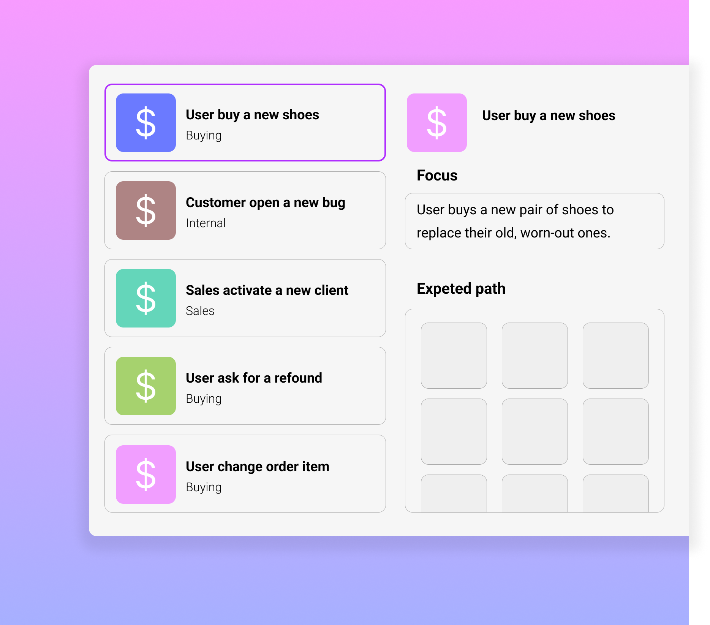

🙌
Hightlight only the things matter
Show your features below, talk to the audience. Start features titles with verb.

Dymanic Flow
Transforms complex flowcharts into easily visualized segments
Figma integration
Share with your developers, designers, products only the items they need to focus on directly on Figjam
Make interactive flow
to help your team work better
helps your stakeholders easily visualize complex flowcharts